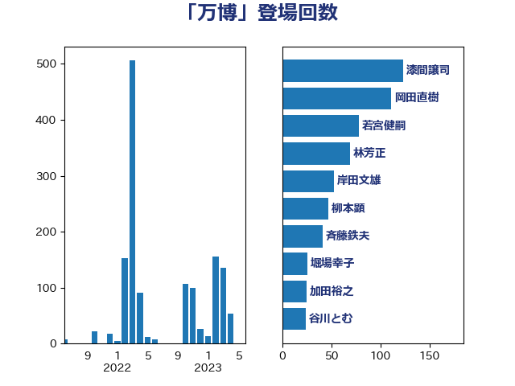

単語「万博」

| 若宮健嗣 | 自由民主党 | 78 回 |
| 林芳正 | 自由民主党 | 59 回 |
| 漆間譲司 | 日本維新の会 | 58 回 |
| 井上信治 | 自由民主党 | 50 回 |
| 柳本顕 | 自由民主党 | 47 回 |
| 石川博崇 | 公明党 | 34 回 |
| 谷川とむ | 自由民主党 | 24 回 |
| 美延映夫 | 日本維新の会 | 23 回 |
| 金城泰邦 | 公明党 | 21 回 |
| 市村浩一郎 | 日本維新の会 | 20 回 |
| 斉藤鉄夫 | 公明党 | 19 回 |
| 穀田恵二 | 日本共産党 | 19 回 |
| 岸田文雄 | 自由民主党 | 17 回 |
| 太田房江 | 自由民主党 | 16 回 |
| 音喜多駿 | 日本維新の会 | 16 回 |
| 井上哲士 | 日本共産党 | 15 回 |
| 萩生田光一 | 自由民主党 | 14 回 |
| 吉川ゆうみ | 自由民主党 | 13 回 |
| 堀場幸子 | 日本維新の会 | 13 回 |
| 山崎誠 | 立憲民主党 | 13 回 |
| 菅義偉 | 自由民主党 | 13 回 |
| 青柳仁士 | 日本維新の会 | 13 回 |
| 伊佐進一 | 公明党 | 12 回 |
| 岩谷良平 | 日本維新の会 | 12 回 |
| 松川るい | 自由民主党 | 12 回 |
| 世耕弘成 | 自由民主党 | 11 回 |
| 池下卓 | 日本維新の会 | 11 回 |
| 小野泰輔 | 日本維新の会 | 10 回 |
| 上野通子 | 自由民主党 | 9 回 |
| 奥下剛光 | 日本維新の会 | 9 回 |
| 井上英孝 | 日本維新の会 | 8 回 |
| 和田有一朗 | 日本維新の会 | 8 回 |
| 福島伸享 | 無所属 | 8 回 |
| 鈴木敦 | 国民民主党 | 8 回 |
| 梅村みずほ | 日本維新の会 | 7 回 |
| 沢田良 | 日本維新の会 | 6 回 |
| 田島麻衣子 | 立憲民主党 | 6 回 |
| 石井章 | 日本維新の会 | 6 回 |
| 細田健一 | 自由民主党 | 6 回 |
| 赤羽一嘉 | 公明党 | 6 回 |
| 長浜博行 | 無所属 | 6 回 |
| 古川元久 | 国民民主党 | 5 回 |
| 國重徹 | 公明党 | 5 回 |
| 小田原潔 | 自由民主党 | 5 回 |
| 山口壯 | 自由民主党 | 5 回 |
| 務台俊介 | 自由民主党 | 4 回 |
| 室井邦彦 | 日本維新の会 | 4 回 |
| 徳永久志 | 立憲民主党 | 4 回 |
| 浅川義治 | 日本維新の会 | 4 回 |
| 浦野靖人 | 日本維新の会 | 4 回 |
| 西銘恒三郎 | 自由民主党 | 4 回 |
| 中川康洋 | 公明党 | 3 回 |
| 庄子賢一 | 公明党 | 3 回 |
| 進藤金日子 | 自由民主党 | 3 回 |
| 遠藤良太 | 日本維新の会 | 3 回 |
| 上田清司 | 国民民主党 | 2 回 |
| 中谷真一 | 自由民主党 | 2 回 |
| 串田誠一 | 日本維新の会 | 2 回 |
| 城内実 | 自由民主党 | 2 回 |
| 宗清皇一 | 自由民主党 | 2 回 |
| 梶山弘志 | 自由民主党 | 2 回 |
| 森山浩行 | 立憲民主党 | 2 回 |
| 浜口誠 | 国民民主党 | 2 回 |
| 羽田次郎 | 立憲民主党 | 2 回 |
| 下条みつ | 立憲民主党 | 1 回 |
| 岡田克也 | 立憲民主党 | 1 回 |
| 川田龍平 | 立憲民主党 | 1 回 |
| 末松義規 | 立憲民主党 | 1 回 |
| 本田太郎 | 自由民主党 | 1 回 |
| 杉久武 | 公明党 | 1 回 |
| 松沢成文 | 日本維新の会 | 1 回 |
| 横山信一 | 公明党 | 1 回 |
| 浅田均 | 日本維新の会 | 1 回 |
| 渡辺猛之 | 自由民主党 | 1 回 |
| 滝波宏文 | 自由民主党 | 1 回 |
| 石井苗子 | 日本維新の会 | 1 回 |
| 福重隆浩 | 公明党 | 1 回 |
| 稲富修二 | 立憲民主党 | 1 回 |
| 谷合正明 | 公明党 | 1 回 |
| 足立康史 | 日本維新の会 | 1 回 |
| 金子俊平 | 自由民主党 | 1 回 |
| 金子恭之 | 自由民主党 | 1 回 |
| 馬場成志 | 自由民主党 | 1 回 |
| 高木かおり | 日本維新の会 | 1 回 |
| 高橋千鶴子 | 日本共産党 | 1 回 |
| 高階恵美子 | 自由民主党 | 1 回 |